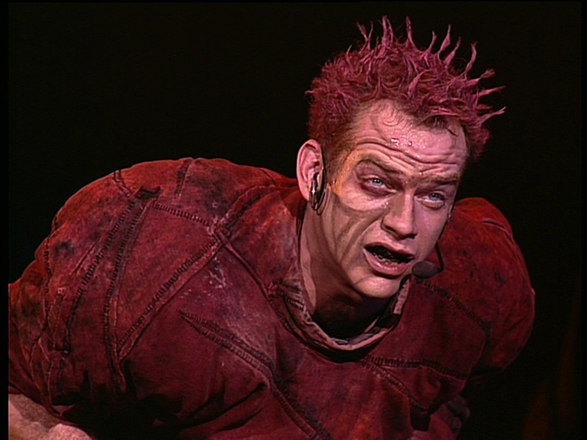

Proje
Remastering Notre-Dame de Paris (1998)
Bağımsız ve ticari amaçlı olmayan ilk projem: 1998 tarihli Notre-Dame de Paris müzikalinin sahne kaydını günümüz ekranlarında daha iyi izlenebilir hâle getirmek amacıyla yeniden düzenledim. Çalışmanın çıkış noktası görüntüyü değiştirmek, yeniden üretmek ya da ona gerçekte bulunmayan ayrıntılar eklemek değildi. Temel hedef, orijinal kaydın (DVD) renklerini, ışık yapısını, sahne atmosferini ve dönemine ait doğal görüntü dokusunu mümkün olduğunca korumaktı.
Bugün internette karşılaşılan benzer remaster çalışmalarının büyük bölümünde, sürecin en az bir aşamasında yapay zekâ destekli görüntü büyütme, keskinleştirme veya ayrıntı üretme yöntemleri kullanılıyor. Bu projede ise yapay zekâ hiçbir aşamada kullanılmadı. Görüntü, yalnızca bilgisayarın işlemci gücüyle yürütülen klasik görüntü işleme yöntemleri kullanılarak yeniden hazırlandı.
Bildiğim ve ulaşabildiğim kadarıyla bu kayıt için, başından sonuna kadar yapay zekâdan uzak duran ve orijinal görüntüyü yeniden yorumlamak yerine ona sadık kalmayı amaçlayan başka bir remaster çalışması bulunmuyor. Remastering işlemini gerçekleştirdiğim birkaç video kendi Youtube kanalım: “VeTu Digital” kanalında yayınlanmaktadır. Aşağıdaki bağlantıya tıklayarak oynatma listesine ulaşabilirsiniz.
YouTube Oynatma Listesini Görüntüle